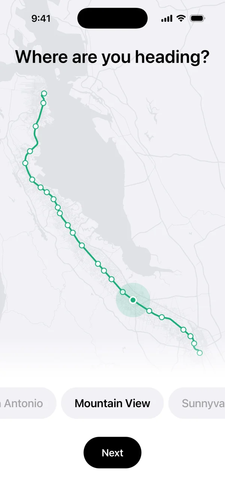
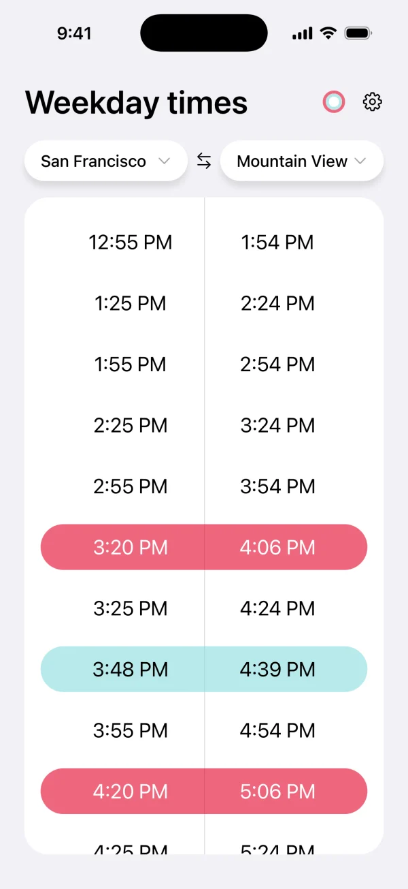
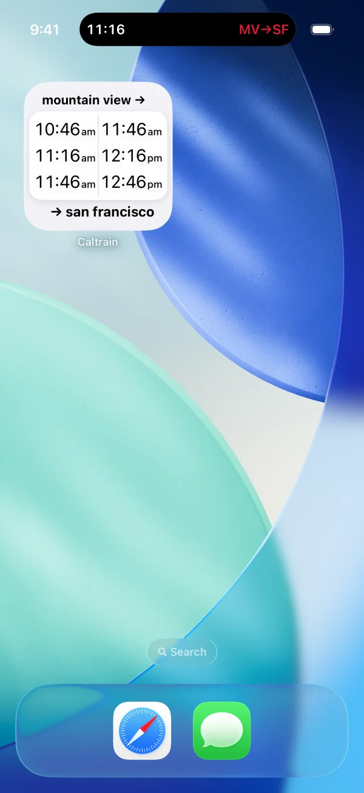
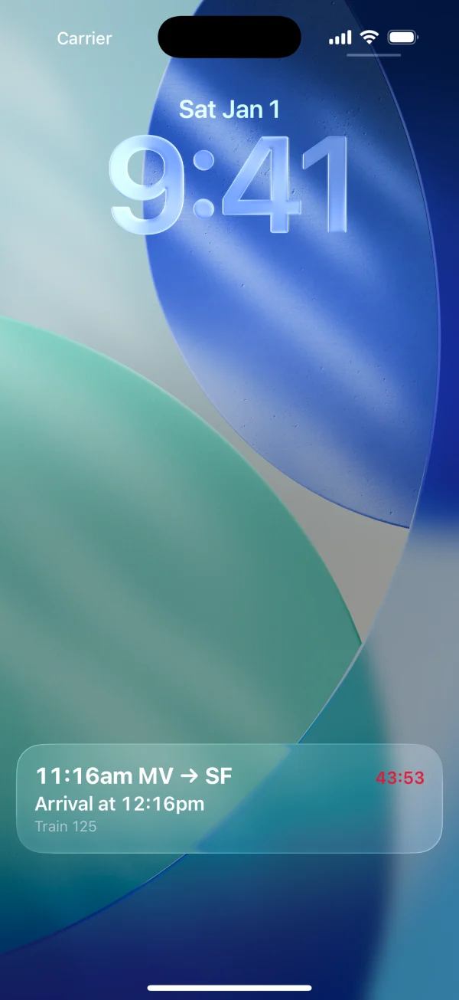
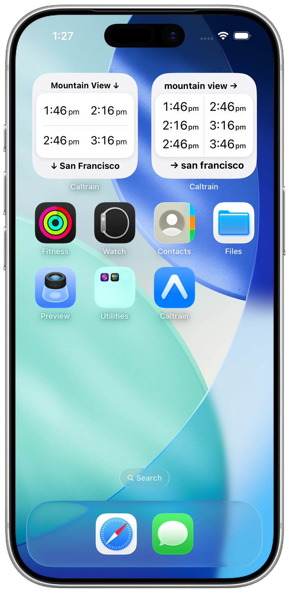

iOS App Concept
Caltrain
- Time:
- Fall 2026
- Role:
- Design and code
Overview
Caltrain carries about 40,000 riders every weekday. Though many options exist for finding the next train, there isn’t one integrated system for checking train times built around the daily commuter, who often travels between the same home and work stations.
Inspiration
“It’s such a hassle to pull up a PDF on my phone, then scroll and zoom to try to find my station.”
What time is the next Caltrain? Today, answering that takes 15 to 32 seconds and means one of three options:
Option 1: Caltrain PDF
32 seconds
- Requires pinch and zoom
- Tracking columns
Option 2: Google Maps
20 seconds
- Requires pinch and zoom
- Tracking columns
- Can see how far you are from station
- Routes you to the closest station
Option 3: Caltrain site
15 seconds
- Re-enter origin and destination
- Re-enter weekday/weekend
- Scroll past intermediary stops
Version 1

Feedback 1
“How could I represent the Caltrain visually?”
Though the onboarding screen is simple and intuitive, upon feedback and design critique, I was encouraged to think outside of the box. Many people do use a Google Maps integration, and it’s nice to see where along the route you’re going. I retained the carousel for people who still prefer scrolling to find their station.
Onboarding
I switched from a toggle to a visual map.


Then I added contextual defaults, which collapse onboarding into one page.

Caltrain assumes your origin station is your current location, so you only pick your destination.

Past trains are grayed out, and the timetable scrolls to the next departure. The app also checks the date and switches between weekday and weekend times on its own.
Version 2
Version 2 brought in the contextual defaults: location-based onboarding and grayed-out past trains.

Feedback 2: Progressive disclosure
I received feedback that a user had to process more than necessary on the timetable page. For example, do we really need the local, limited, and express pills constantly toggled? Also, weekend and weekday could be simplified.


Version 3
Version 3 applies Feedback 2. The filter pills and the weekday/weekend toggle are gone, and the timetable switches between weekday and weekend times automatically.

Widgets and Other Operating System Features
Home screen widgets show the next trains between your stations without opening the app.

Outcome
This will ship soon.